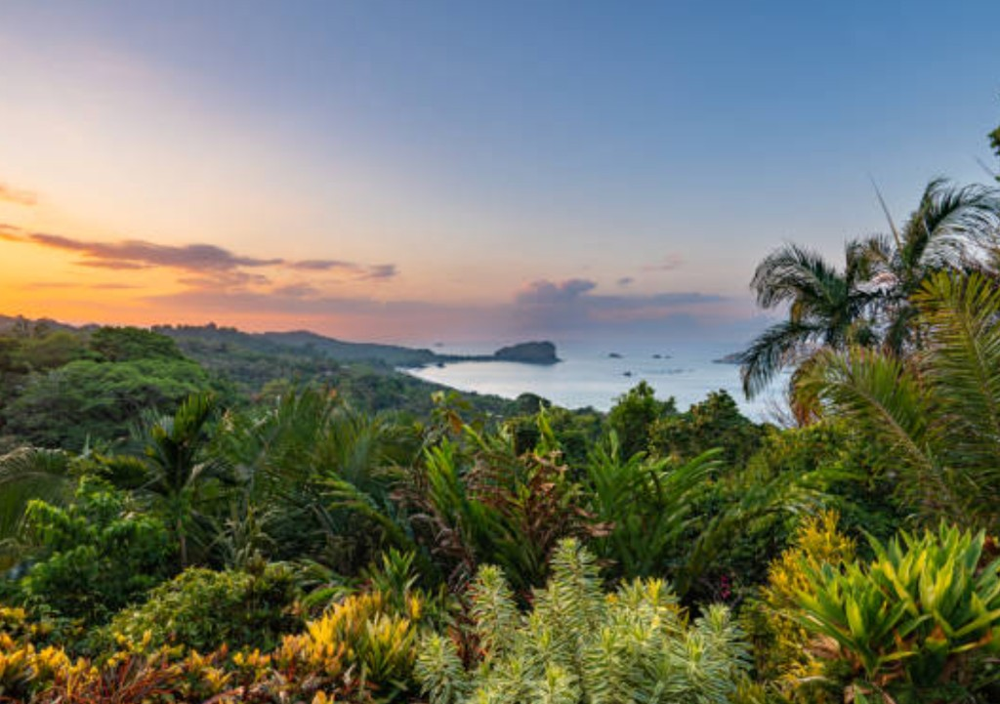

The Best of Costa Rica tour is among the most popular Puntarenas cruise excursions because it delivers variety without extreme activity. You'll travel through the Central Pacific countryside — past mango, coffee and citrus plantations — with stops for wildlife viewing, scenic overlooks and authentic Costa Rican culture. Compare this option when you want one tour that samples what the region is known for.
Tour details are provided on confirmation. Always check your cruise ship arrival and departure times before booking.
Cruise Passenger Snapshot
- Duration
- Approx. 7 hours
- Activity level
- Easy
- Best for
- First-time Costa Rica visitors
- Food/drink
- Local lunch included
- Return-to-ship confidence
- High — standard full-day cruise excursion timing
- Walking level
- Light — short stops, some uneven paths
Why cruise passengers choose this tour
- Balanced introduction to Costa Rica in a single port day
- Included lunch removes planning stress ashore
- Easy activity level suits a wide range of ages
- Wildlife and scenery without horseback riding or zip lines
- Reliable choice when you are unsure which Puntarenas tour to pick
Good to know before booking
- Shared coach tour with other cruise passengers — not private
- Itinerary highlights may vary slightly by operator and season
- Pickup is typically near the Puntarenas cruise pier — confirm on booking
- Wildlife sightings are natural and never guaranteed
- Compare with Tarcoles crocodile safari if you want deeper wildlife focus
What to bring
- Closed-toe walking shoes
- Sunscreen, hat and insect repellent
- Light rain layer — tropical showers are common
- Ship card, cash for souvenirs and camera
- Any personal medications
Who this tour is best for
Passengers visiting Costa Rica for the first time who want a broad overview — countryside, wildlife glimpses, local food and culture — without committing to a single adventure activity. Ideal for couples, families with older children and anyone preferring an easy-paced day.
Who should choose a different tour
Choose the Tarcoles River crocodile safari for maximum wildlife focus, the eco horseback safari for active adventure, or a private tour if you need custom pacing or a dedicated vehicle for your group.